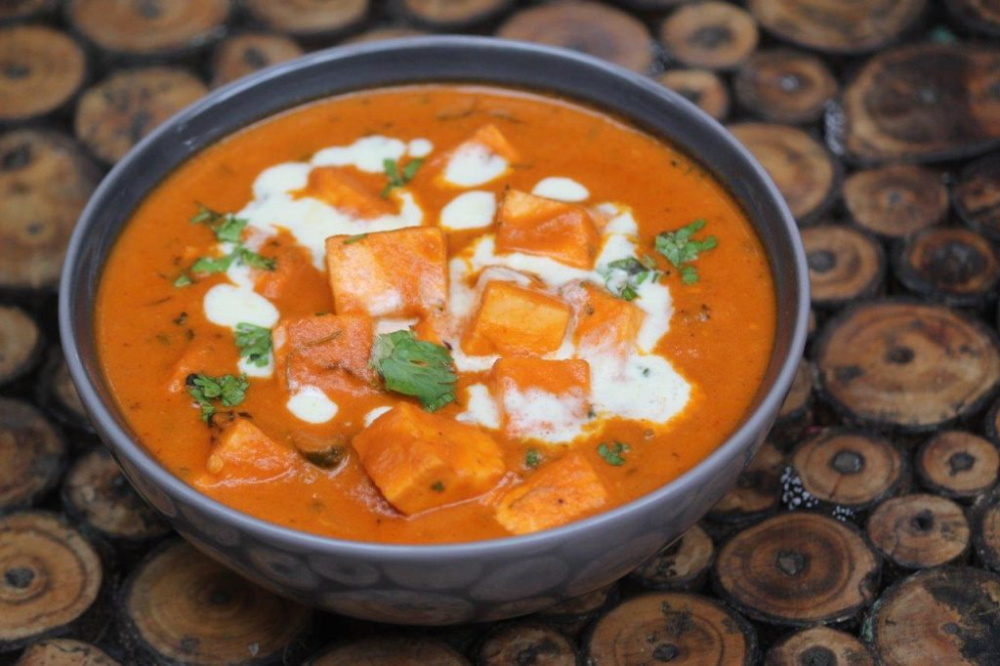

Panner Butter Masala

Description
Quick Paneer Butter Masala Recipe with step wise pictures. Super good and delicious paneer butter masala which is not only easy to make but taste so delicious and yummy. This is a flavourful spicy paneer dish which is so easy to make. Taste amazing with roti, naan or pulao too. You can serve it with steamed rice as well. This is a basic paneer butter masala recipe and taste so heavenly just like restaurant ones.
Ingredients
- Butter - 2 tsp
- Cumin Seeds / Jeerakam - 1 tsp
- Onion - 1 chopped finely
- Ginger Garlic Paste - 1 tsp
- Tomato - 4 pureed
- Kashmiri Chilli Powder - 2 tsp
- Garam Masala Powder - 1 tsp
- Salt to taste
- Sugar - 1 tblsp
- Paneer - 200 grams cubed
- Fresh Cream - ½ cup
- Kasuri Methi Leaves - 2 tsp
- Coriander Leaves - 2 tsp chopped finely
Steps
- Set instant pot to saute mode.Add in oil and fry paneer till light golden. Drain and set aside in a bowl.
- Heat butter and add cumin seeds. Let them sizzle.
- Pour in ground onion tomato masala. Cook till raw smell leaves. it will take around 10 mins or so. If the masala gets stuck to the bottom, add little hot water and scrape the pan.
- In goes spice powders and mix well. Add salt and sugar. Mix well.
- Add in the paneer cubes and water. Cover and cook for 10 mins.
- Lastly you can add cream and kasuri methi leaves. mix well and add coriander leaves.
- Serve hot with roti or naan.